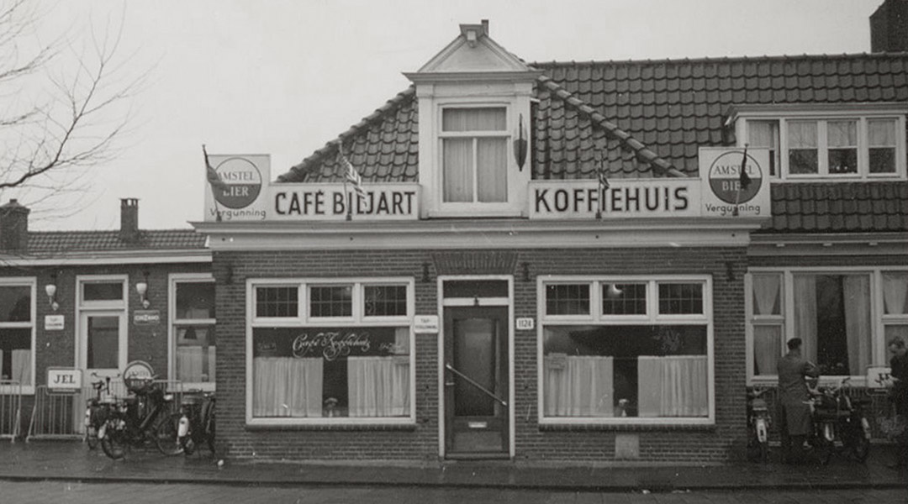
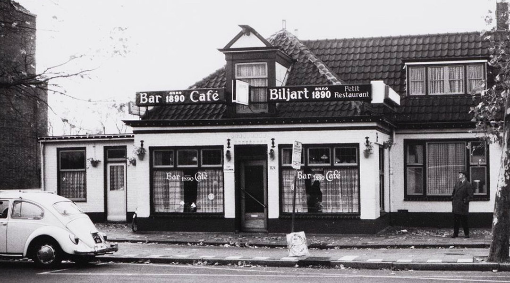
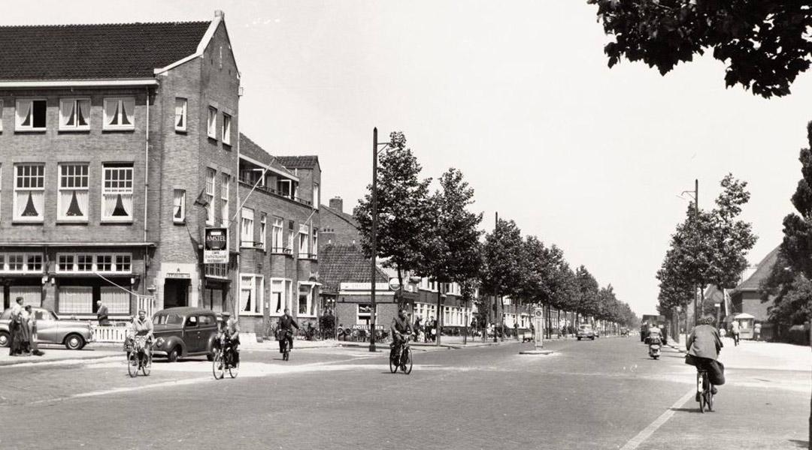
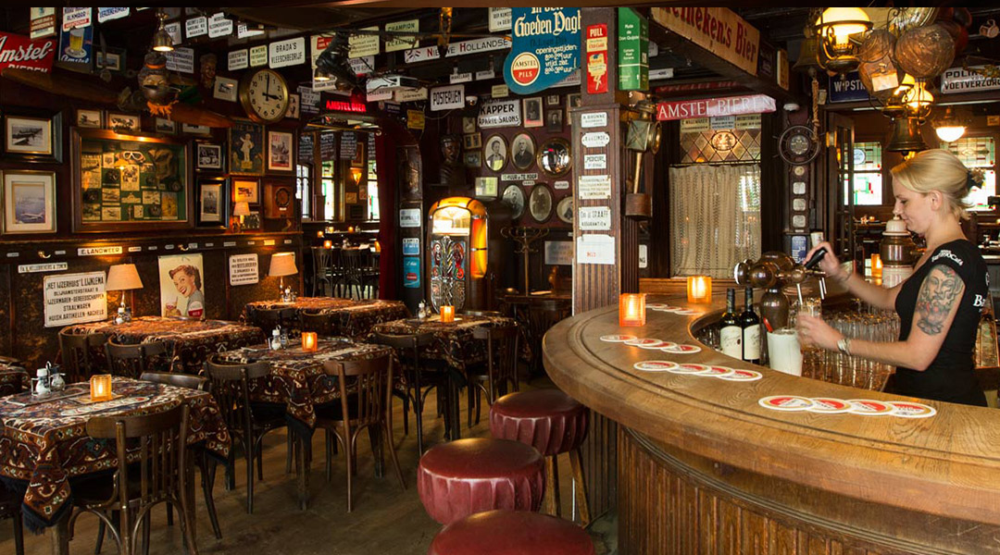
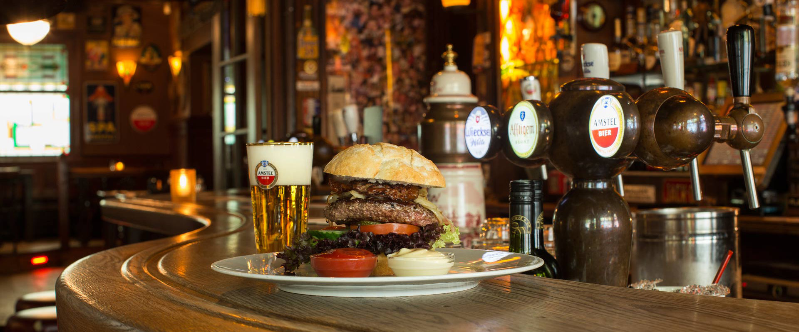
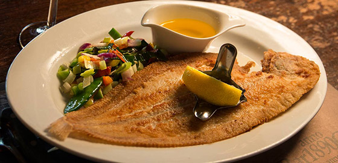
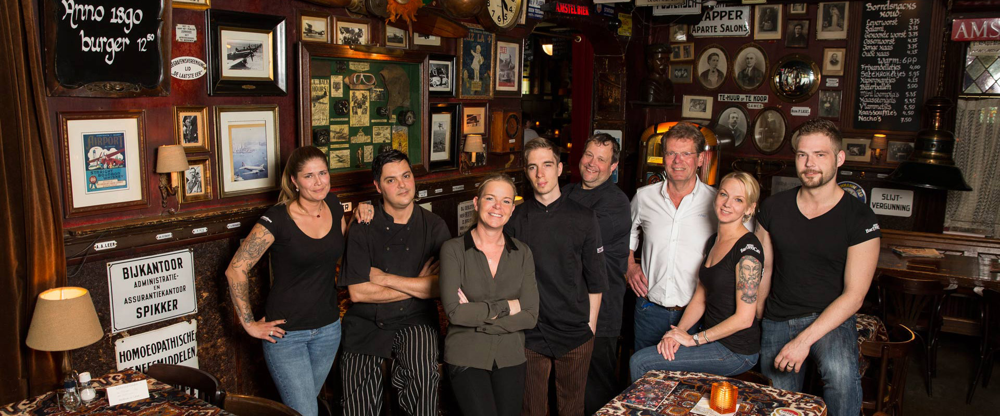

Café, eetcafé en feestcafé in Amsterdam
Van kruidenier en koffiehuis tot populaire kroeg
Al ruim 130 jaar dé kroeg op de grens van Amsterdam en Amstelveen. Van de eerste koffie tot het laatste rondje.
Niet voor niets stond Anno1890 twee keer op nummer 1 in de Café Top 100.
Begonnen als kruidenierswinkeltje
Bijna niet voor te stellen, maar het is al ruim 130 jaar geleden dat Café Anno1890 de deuren opende. Aanvankelijk als kruidenierswinkeltje, waarin onder de toonbank in het geheim een borrel werd geschonken.
Inmiddels is het uitgegroeid tot één van de bekendste kroegen in Amsterdam, Amstelveen en de verre omtrek. Als café, eetcafé en restaurant, en als feestcafé met in het live-seizoen iedere tweede en laatste zaterdag van de maand live muziek van de allerbeste Nederlandse artiesten.
Van kroeg anno nu tot grand café. Van ’s ochtends vroeg tot ’s avonds laat.




De hele dag terecht
Vanaf de vroege ochtend tot in de late avonduurtjes kun je in 1890 terecht voor de lekkerste koffie, een smakelijke lunch, een altijd bruisend borreluur, een gezellig diner tegen prettige prijzen en nog heel veel meer gezelligheid in de late uren.
De Anno1890 menukaarten
Een uitgebreide, gevarieerde en altijd verrassende kaart met, ook niet onbelangrijk, vriendelijke prijzen. Daarnaast wekelijks wisselende daghappen en elke maand een specialiteit: vraag ernaar of kijk op de borden.


Belegde broodjes
Wit, bruin of oerbrood. Frans stokbroodje of ciabatta € 0,75 extra.
- Jong belegen of boerenham4,75
- Oude kaas (Old Amsterdam)5,00
- Grillworst of leverworst4,75
- Ossenworst of rosbief6,95
- Tartaar met ui6,25
- Tartaar met ui en gekookt ei6,75
- Filet americain5,50
- Filet americain speciaal6,50
- Tonijnsalade huisgemaakt8,75
- Gezond speciaal kaas, sla, tomaat en ei6,50
- Gekookt ei, tomaat en mayo5,25
- Kroket Oma Bobs 100% rundvlees4,75
- Groentekroket5,25
- Frikandel4,75
- Gebakken of gekookt ei4,50
- Gebakken ei met kaas of bacon5,50
- Siem geklutst ei met room4,75
- Siem speciaal met ui en champignons5,95
- Balgehakt huisgemaakt6,75
- Warm vlees met satésaus en augurk5,75
- Warm vlees speciaal met champignons en ui7,50
Lunchspecials
- Kroketten met brood 2 sneetjes brood met 2 kroketten9,50
- Oerbrood geitenkaas met appel, honing en pijnboompitten uit de oven10,50
- Italiaanse bol carpaccio ossenhaas met pijnboompitten, rucola, Parmezaan, truffelmayonaise12,50
- Pattaya gebakken kip, Thaise kruiden en taugé11,75
- Boeddha gebakken ossenhaas, Oosterse kruiden, basilicum en taugé12,50
- Clubsandwich classic kipfilet, bacon, ei, sla, tomaat en kerriemayonaise12,75
- Clubsandwich gerookte zalm met sla, roomkaas, rode ui en ei14,50
- Kip- of varkenssaté 3 stokjes met stokbrood, satésaus en kroepoek15,00
- 1890 burger (Black Angus rund) met sla, tomaat, augurk, bacon, gebakken ui en koude sauzen14,50
- Garnalenkroketten met brood en truffelmayonaise13,50
- Tuna melt oerbrood met huisgemaakte tonijn en cheddar uit de oven11,50
- Pistoletje mozzarella met pesto en tomaat uit de oven9,95
- Broodje hete kip pittige stukjes gebakken kip met champignons en ui11,75
- Scrambled egg met zalm roerei met stukjes gerookte zalm op toast13,50
Uitsmijters
Eieren + boterhammen: 2/2 of 3/3.
- 2/23/3
- Naturel7,509,75
- Kaas of ham8,2510,25
- Bacon8,2510,25
- Ham en kaas, of bacon en kaas8,7511,25
- Rosbief8,7511,25
- Ham, bacon en kaas9,5012,50
Omeletten
- Naturel8,50
- Kaas, ham of champignons9,50
- Kaas en ham9,75
- Champignons en kaas10,50
- Boeren11,50
Voorgerechten
- Brood met smeersels met kruidenboter, aioli en tapenade7,50
- Uiensoep Franse uiensoep met stokbrood8,50
- Groentekroketten (vega) met toast, mosterd en gefrituurde peterselie10,50
- Carpaccio 1890 van de ossenhaas (100%) met rucola, pijnboompitten, Parmezaanse kaas en truffelmayonaise16,95
- Gerookte zalm met toast, ei, kappertjes, rode ui en avocado17,50
- Geitenkaasje (vega) warm met rucola, honing en appeltjes11,95
- Crispy gamba’s gefrituurde gamba’s met citroen en kimchimayo15,95
- Bruschetta getoast stokbrood uit de oven, tomaat, knoflook en basilicum7,95
- Gamba’s in de knoflookolie gebakken15,95
Salades
- Pattaya gebakken kip, Oosterse kruiden, taugé, koriander en noten17,95
- Geit (vega) gebakken geitenkaas, appel, walnoten en spekjes met een honingdressing18,50
- Salade gamba gewokte gamba’s in knoflook, paksoi, rode peper, paprika, rode ui, champignons en taugé20,75
- Riche met gamba’s, gerookte zalm, avocado, tomaat, pijnboompitten en truffelmayonaise20,50
- Thaise ossenhaas gebakken ossenhaaspuntjes, bospaddenstoelen, cashewnoten, koriander, bosui en oestersaus21,95
- Caesarsalade gegrilde kipfilet, Parmezaanse kaas, krokante bacon, ei, croutons en caesardressing18,90
Voor de kleintjes
- Kindermenu kipkrokantjes, kipsaté, frikandelletjes of kroket met patat, appelmoes en mayonaise, en als toetje een bolletje schepijs met slagroom9,95
Weekhap vanaf 16,50
Een wisselend gerecht, te vinden op onze borden, of vraag ernaar bij de bediening. We maken elke dag een hoeveelheid verse daghappen, dus op = op!
Specialiteiten 1890
- Spareribs heerlijk in de marinade gegaard, met koude sauzen23,95
- Sliptongen (3 stuks) met ravigottesaus26,50
- Schnitzel 300 gram klassieker in Weense stijl21,50
- Zeetong 400-450 gram in de roomboter gebakken met boterjus32,95
- Chickenwings 12 stuks, geserveerd met salade en friet20,95
- Kaasfondue met verse groente, bleekselderij, komkommer, cherrytomaat en stokbrood23,95
- Hele kip met huisgemaakte salade en appelmoes20,75
- Kalfslever met gebakken spek, appel en ui24,95
Steak van de grill
- Tournedos 200 gram met een saus naar keuze30,95
- Hollandse biefstuk 200 gram met een saus naar keuze28,95
Saus naar keuze: pepersaus, groene knoflook, champignonroomsaus of kruidenboter.
Saté & burgers
- 3 stokjes5 stokjes
- Kipsaté kipfilet, krokante ui, pindasaus, ei en kroepoek18,5020,95
- Saté van de haas varkenshaas, krokante ui, pindasaus, ei en kroepoek18,5020,95
- 1890 burger van Black Angus (100% rundvlees), sla, tomaat, augurk, gebakken ui, bacon en koude sauzen18,95
- Vega club burger vegaburger met sla, tomaat, augurk, gebakken ui en koude sauzen18,95
- Ossenhaassaté Bali 250 gram ossenhaas, krokante ui, pindasaus, ei, pittige boontjes en kroepoek24,50
Bij de gerechten serveren we een puntzak frites.
Bijgerechten
- Loaded frites met Parmezaanse kaas en truffelmayonaise5,75
- Gemengde salade4,75
- Seizoensgroentemix4,75
- Aardappelgratin4,75
- Zoete-aardappelfriet5,75
Desserts
- Brownie huisgemaakt, met een bolletje vanille-ijs9,50
- Cheesecake huisgemaakt, met frambozensaus9,50
- IJscoupe trio mix van vanille-, chocolade- en aardbeienijs met slagroom9,75
- Dame blanche bolletjes vanille-ijs met warme chocoladesaus10,50
- Opfrissertje vanille-ijs, jus d’orange en slagroom9,50
- Warme appelpunt met een bolletje vanille-ijs en slagroom9,50
Bij de koffie
- Appelgebak van het huis4,75
- Appelgebak met slagroom5,75
Warme dranken
- Koffie, vers gemalen3,25
- Cappuccino3,50
- Koffie verkeerd3,95
- Latte macchiato4,50
- Espresso3,25
- Dubbele espresso5,50
- Cortado3,70
- Flat white5,75
- Thee3,25
- Thee met honing3,50
- Thee met verse gember4,75
- Thee met verse munt en honing4,75
- Warme chocomelk4,00
- Warme chocomelk met slagroom4,75
Jus d’orange & frisdranken
- Melk en karnemelk3,25
- Jus d’orange5,95
- Frisdranken op flesv.a. 3,75
Wijnen van het huis
- glasfles
- Sauvignon blanc5,9526,50
- Rosé5,9526,50
- Merlot5,9526,50
Speciale wijnen
- glasfles
- Pinot grigio6,5029,50
- Cabernet-carmenère6,5029,50
- Wijn van de maand6,9531,50
Bubbels
- Prosecco piccolo 20 cl10,95
- Prosecco frizzante29,95
- Moët & Chandon84,50
Witte wijnen per fles
- 2020 Casa Silva Chardonnay32,50
- 2025 Jakkelsvlei Chenin blanc33,50
- 2020 Mâcon Uchizy Domaine G37,50
- 2021 Esk Valley Sauvignon blanc37,50
- 2020 Sancerre Jean Max Roger42,50
- 2021 Rueda Verdejo Marqués de Cáceres34,50
Rode wijnen per fles
- 2024 Carmenère Casa Silva, Colección37,50
- 2023 Syrah & Granache JL Colombo (Rhône)41,50
- 2024 Primitivo Masseria Borgo dei Trulli32,50
- 2023 Tempranillo Rioja DOCa Reserva45,50
- 2019 Brazin Old Vine45,50
Heb je een allergie? Meld het ons!
De kaarten om te downloaden:
Menukaart (pdf) Lunchkaart (pdf) Borrelkaart (pdf) Kaart voor grotere groepen (pdf)1890 Live
Naast gezelligheid en lekker eten valt er in Anno1890 vooral heel veel te beleven. In het live-seizoen, van september tot en met mei, organiseren we regelmatig live-avonden: iedere tweede en laatste zaterdag van de maand de gezelligste live muziek van Nederlandse topartiesten.
Houd de agenda in de gaten of meld je aan voor de nieuwsbrief. Dan weet je zeker dat je geen avond mist.
Agenda
- Iedere zaterdagochtendSportcafé 1890
- Feestje vieren bij Anno1890?Bel 020 261 46 49 of mail info@anno1890.nl

Reserveren
We hoeven er niet stoer over te doen, maar Anno1890 heeft slechts 150 zitplaatsen. Wil je eten? Bel voor een reservering naar 020 261 46 49.
Kom je met meer dan 12 personen? Neem dan telefonisch contact op of stuur een mail naar info@anno1890.nl. Voor grotere groepen is er een aparte groepenkaart.
Langskomen
Café Anno1890Amstelveenseweg 1124
1081 JW Amsterdam
020 261 46 49 ook voor reserveringen
info@anno1890.nl
Openingstijden
| Maandag t/m donderdag | 09.00 – 23.00 uur |
|---|---|
| Vrijdag en zaterdag | 09.00 – 00.00 uur |
| Zondag | 11.00 – 23.00 uur |
Geopend op alle dagen van het jaar, behalve eerste kerstdag (25 december).
Bereikbaarheid & parkeren
Anno1890 ligt op de grens tussen Amsterdam en Amstelveen, aan de Amstelveenseweg. Er is ruimschoots parkeergelegenheid in de directe omgeving.
Overdag is het in de omgeving betaald parkeren. ’s Avonds (in Amsterdam ná 19.00 uur, in Amstelveen ná 18.00 uur) en op zondag parkeer je gratis. Op het parkeerterrein bij Gunter en Meuser is een blauwe zone: parkeer daar met je parkeerschijf.